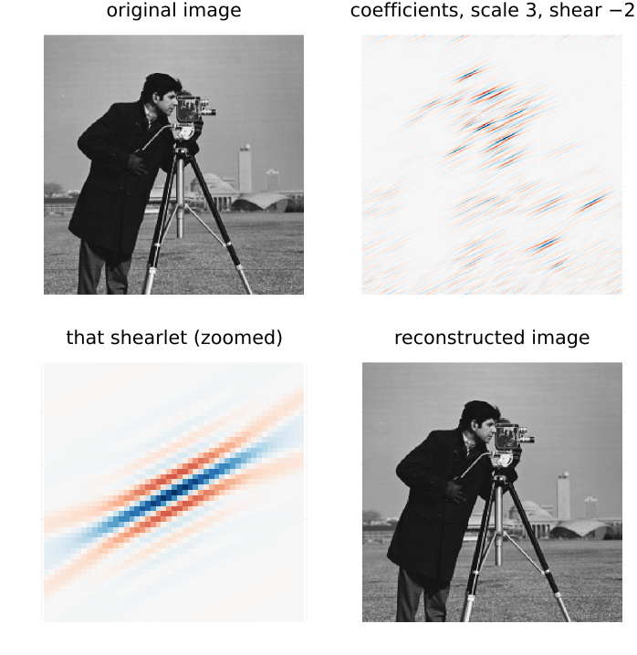
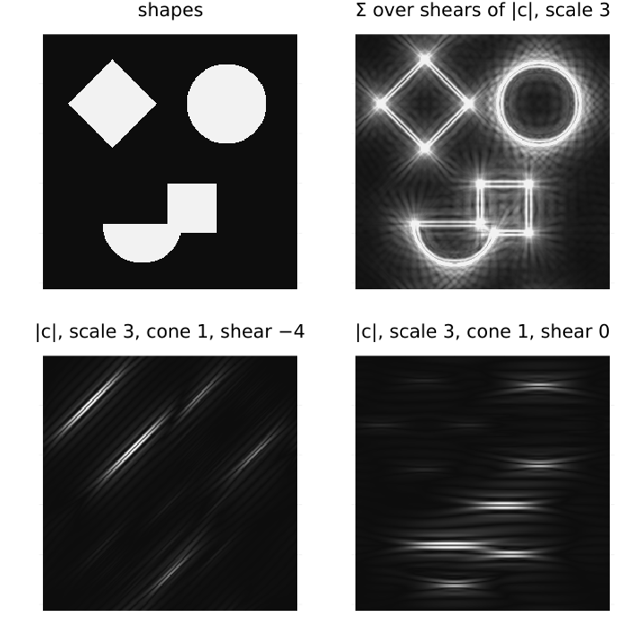
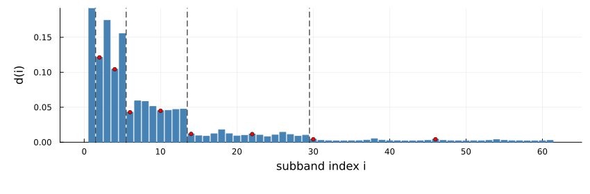
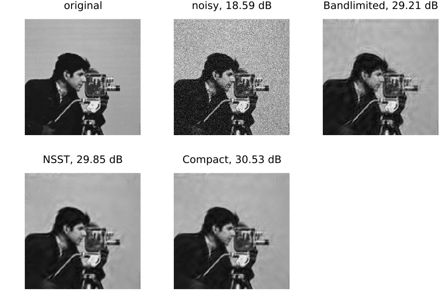
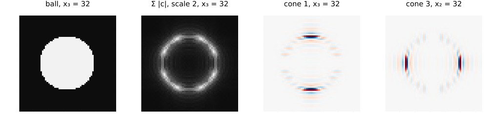

Examples
The experiments the shearlet papers use to show what the transform does, run with this package: the coefficient stack and a round trip (Häuser & Steidl, Figs. 12 and 14), edges of different orientations (their Figs. 1 and 13), directional selectivity and shift invariance, image denoising (Easley, Labate & Lim, Fig. 9; ShearLab 3D, Fig. 11), and a volume. The explanation describes the constructions and lists the papers. Images are shown as images here: axis 1 (rows) runs downwards.
The coefficient stack
The coefficients of an n₁ × n₂ image are one n₁ × n₂ × η array, a subband per slice in the order of subband_layout; every subband has the size of the image. Häuser & Steidl's simple_example shows an image, its coefficients for one shearlet, that shearlet, and the reconstruction:
x = Float64.(Gray.(testimage("cameraman")))
sys = BandlimitedShearlets(scales = 4)
c = analyze(sys, x)
L = subband_layout(sys, size(x))
i = findfirst(==(ShearletIndex{1}(3, 1, (-2,))), L)
Ψ = shearlet_spectra(sys, size(x))
ψ = fftshift(real(ifft(Ψ[:, :, i])))
m = size(x, 1) ÷ 2 + 1
xr = synthesize(sys, c)
plot(showimg(x; title = "original image"), showcoef(c[:, :, i]; title = "coefficients, scale 3, shear −2"),
showcoef(ψ[(m - 24):(m + 24), (m - 24):(m + 24)]; title = "that shearlet (zoomed)"),
showimg(xr; title = "reconstructed image"); layout = (2, 2), size = (700, 720))GKS: cannot open display - headless operation mode active
size(c), maximum(abs, xr .- x), sum(abs2, c) / sum(abs2, x) # Parseval: the energy is kept((512, 512, 61), 1.1102230246251565e-15, 0.9999999999999998)Edges of different orientations
A shearlet responds to an edge only when the edge runs along it, so the subbands of one scale sort the edges of an image by orientation. Häuser and Steidl's Fig. 1 shows this on geometric shapes: the sum of the coefficients over all shears of one scale traces every edge, while one shear picks out the edges of one orientation.
n = 256
shapes = zeros(n, n)
for i in 1:n, j in 1:n
diamond = abs(i - 70) + abs(j - 70) < 45 # a square rotated by 45°
disc = hypot(i - 70, j - 185) < 40
half = hypot(i - 190, j - 100) < 40 && i > 190 # a half disc …
square = abs(i - 175) < 25 && abs(j - 150) < 25 # … next to a square
shapes[i, j] = diamond || disc || half || square
end
sys = BandlimitedShearlets(scales = 4)
c = analyze(sys, shapes)
L = subband_layout(sys, size(shapes))
fine = [i for (i, l) in enumerate(L) if l.scale == 3]
pick(k) = findfirst(==(ShearletIndex{1}(3, 1, (k,))), L)
plot(showimg(shapes; title = "shapes"),
showimg(dropdims(sum(abs, c[:, :, fine]; dims = 3); dims = 3); title = "Σ over shears of |c|, scale 3", color = :grays, clims = (0, 0.6)),
showimg(abs.(c[:, :, pick(-4)]); title = "|c|, scale 3, cone 1, shear −4", color = :grays),
showimg(abs.(c[:, :, pick(0)]); title = "|c|, scale 3, cone 1, shear 0", color = :grays);
layout = (2, 2), size = (700, 720))
Cone 1 is the axis-1 cone: its shear-0 shearlets oscillate down the rows, so they see the horizontal edges of the square and the top and bottom of the disc. Shear $-4$ of the 4 per side is a seam shearlet, at 45°: it sees two sides of the diamond and nothing of the square.
Their Fig. 13 condenses the coefficients into one number per subband, the mean magnitude $d(i) = \frac{1}{n_1 n_2}\sum_{m}|c(m, i)|$. Dashed lines separate the scales, the lowpass (off the scale) is on the left, and the red dots mark the diagonal (seam) shearlets. The mean falls from scale to scale, as it does for any piecewise constant image. Within a scale the values stay close: the disc gives every direction some edge, and the diamond and the square add the diagonal and the axis directions in similar amounts:
d = vec(mean(abs, c; dims = (1, 2)))
p = bar(d; legend = false, ylims = (0, 1.1maximum(d[2:end])), xlabel = "subband index i", ylabel = "d(i)", size = (850, 280),
bottom_margin = 5Plots.mm, left_margin = 5Plots.mm, color = :steelblue, linecolor = :steelblue)
for j in 1:4
vline!(p, [findfirst(l -> l.scale == j, L) - 0.5]; ls = :dash, color = :black)
end
diag = [i for (i, l) in enumerate(L) if l.scale > 0 && abs(l.shear[1]) == 2^(l.scale - 1)]
scatter!(p, diag, d[diag]; color = :red, markersize = 3)
p
Directional selectivity
A plane wave shows where the subbands point: its energy should land in the subband whose direction is the wave's: cone 1 when $|\omega_2| \le |\omega_1|$, with shear $k \approx -s\,\omega_2/\omega_1$ for $s$ shears per side (the seam elements are listed under cone 1). Here, for waves at the finest scale of each system:
n = 256
systems = ["Bandlimited" => BandlimitedShearlets(scales = 4), "NSST" => NSSTShearlets(),
"Compact" => CompactShearlets()]
@printf("%6s %-12s", "angle", "(f₁, f₂)")
foreach(s -> @printf(" %-22s", first(s)), systems); println()
for θ in 0:15:165
# On the square ‖f‖∞ = 90, inside the finest scale of every system.
f₁, f₂ = round.(Int, 90 .* (cosd(θ), sind(θ)) ./ max(abs(cosd(θ)), abs(sind(θ))))
wave = [cos(2π * (f₁ * i + f₂ * j) / n) for i in 0:(n - 1), j in 0:(n - 1)]
@printf("%5d° %-12s", θ, (f₁, f₂))
for (_, sys) in systems
cw = analyze(sys, wave)
l = subband_layout(sys, (n, n))[argmax(vec(sum(abs2, cw; dims = (1, 2))))]
@printf(" scale %d cone %d k = %-3d", l.scale, l.cone, l.shear[1])
end
println()
end angle (f₁, f₂) Bandlimited NSST Compact
0° (90, 0) scale 4 cone 1 k = 0 scale 4 cone 1 k = 0 scale 4 cone 1 k = 0
15° (90, 24) scale 4 cone 1 k = -2 scale 4 cone 1 k = -1 scale 4 cone 1 k = -1
30° (90, 52) scale 4 cone 1 k = -5 scale 4 cone 1 k = -2 scale 4 cone 1 k = -2
45° (90, 90) scale 4 cone 1 k = -8 scale 4 cone 1 k = -4 scale 4 cone 1 k = -4
60° (52, 90) scale 4 cone 2 k = -5 scale 4 cone 2 k = -2 scale 4 cone 2 k = -2
75° (24, 90) scale 4 cone 2 k = -2 scale 4 cone 2 k = -1 scale 4 cone 2 k = -1
90° (0, 90) scale 4 cone 2 k = 0 scale 4 cone 2 k = 0 scale 4 cone 2 k = 0
105° (-24, 90) scale 4 cone 2 k = 2 scale 4 cone 2 k = 1 scale 4 cone 2 k = 1
120° (-52, 90) scale 4 cone 2 k = 5 scale 4 cone 2 k = 2 scale 4 cone 2 k = 2
135° (-90, 90) scale 4 cone 1 k = 8 scale 4 cone 1 k = 4 scale 4 cone 1 k = 4
150° (-90, 52) scale 4 cone 1 k = 5 scale 4 cone 1 k = 2 scale 4 cone 1 k = 2
165° (-90, 24) scale 4 cone 1 k = 2 scale 4 cone 1 k = 1 scale 4 cone 1 k = 1Each system puts every wave in its finest scale and, as the shear convention predicts, at shear $k \approx -s \tan\theta$ in cone 1 for $|\theta| \le 45°$ and $k \approx -s \cot\theta$ in cone 2 otherwise ($s = 8$ shears per side for the band-limited system at scale 4, $s = 4$ for the other two). At 45° and 135° the seam elements ($|k| = s$) take the wave, listed under cone 1. The waves lie on the square $\lVert f\rVert_\infty = 90$ because the scales of all three systems are bands of $\lVert\omega\rVert_\infty$.
Shift invariance
No subband is decimated, so a circular shift of the image shifts every subband by the same amount, exactly:
x = Float64.(Gray.(testimage("cameraman")))
for (name, sys) in systems
c0 = analyze(sys, x)
cs = analyze(sys, circshift(x, (5, -7)))
@printf("%-12s max |T(shift x) − shift(T x)| = %.1e\n", name, maximum(abs, cs .- circshift(c0, (5, -7, 0))))
endBandlimited max |T(shift x) − shift(T x)| = 3.3e-16
NSST max |T(shift x) − shift(T x)| = 6.7e-16
Compact max |T(shift x) − shift(T x)| = 5.6e-16Denoising
The classical experiment of the shearlet papers (Easley, Labate & Lim, Fig. 9; ShearLab 3D, Fig. 11; Lim, Fig. 11): add white Gaussian noise of standard deviation $\sigma$ to an image, hard-threshold the coefficients, and reconstruct. The noise in subband $i$ has standard deviation $\sigma_i = \sigma\,\lVert\psi_i\rVert_2$, which the spectra give exactly ($\lVert\psi_i\rVert_2^2$ is the mean of $|\hat\psi_i|^2$ over the grid), so a coefficient is kept when it exceeds $\lambda\sigma_i$. $\lambda = 3$, and 4 on the finest scale, where the noise dominates; the lowpass is kept. A workspace holds each system's masks and FFT plans, so the forward and inverse transforms do not rebuild them:
function denoise(noisy, sys, σ; ws = make_workspace(sys, Float64, size(noisy)))
L = subband_layout(sys, size(noisy))
Ψ = shearlet_spectra(sys, size(noisy))
J = maximum(l -> l.scale, L)
c = analyze(sys, noisy; workspace = ws)
for (i, l) in enumerate(L)
islowpass(l) && continue
λ = (l.scale == J ? 4 : 3) * σ * sqrt(mean(abs2, view(Ψ, :, :, i)))
b = view(c, :, :, i)
b .= ifelse.(abs.(b) .>= λ, b, 0.0)
end
return synthesize(sys, c; workspace = ws)
end
x = 255 .* Float64.(Gray.(testimage("cameraman")))
Random.seed!(42)
σ = 30
noisy = x .+ σ .* randn(size(x))
results = [name => denoise(noisy, sys, σ) for (name, sys) in systems]
@printf("noisy: %.2f dB\n", psnr(x, noisy))
for (name, y) in results
@printf("%-12s %.2f dB\n", name, psnr(x, y))
endnoisy: 18.59 dB
Bandlimited 29.21 dB
NSST 29.85 dB
Compact 30.53 dBcrop = (1:256, 129:384)
panels = [showimg(view(x, crop...); title = "original", clims = (0, 255)),
showimg(view(noisy, crop...); title = @sprintf("noisy, %.2f dB", psnr(x, noisy)), clims = (0, 255))]
for (name, y) in results
push!(panels, showimg(view(y, crop...); title = @sprintf("%s, %.2f dB", name, psnr(x, y)), clims = (0, 255)))
end
plot(panels...; layout = (2, 3), size = (900, 620))
Over a range of noise levels:
@printf("%5s %8s", "σ", "noisy"); foreach(s -> @printf(" %12s", first(s)), systems); println()
for σ in (10, 20, 30, 40)
Random.seed!(1)
y = x .+ σ .* randn(size(x))
@printf("%5d %8.2f", σ, psnr(x, y))
foreach(((_, sys),) -> @printf(" %12.2f", psnr(x, denoise(y, sys, σ))), systems)
println()
end σ noisy Bandlimited NSST Compact
10 28.13 34.53 35.19 36.00
20 22.11 31.12 31.69 32.41
30 18.59 29.22 29.75 30.48
40 16.09 27.94 28.39 29.14Plain hard thresholding is the simplest estimator; the papers' numbers come from it or from refinements of it (e.g. thresholds per scale tuned on test images), so they are comparable in trend only.
Volumes
On 3-D data the band-limited and compact systems split the frequency cube into the three pyramids around the axes; a 3-D shearlet is a plate, and it responds to surfaces through the volume along its orientation. The streaming form of the transform hands over one subband at a time, so a statistic of the coefficients needs no room for all of them. Below, a ball in a 64³ volume: the central slice of the volume, of the summed finest-scale magnitudes, and of the unsheared finest-scale subbands of cones 1 and 3:
n = 64
ball = [Float64(hypot(i - 32, j - 32, k - 32) < 18) for i in 1:n, j in 1:n, k in 1:n]
sys3 = BandlimitedShearlets(scales = 2)
L3 = subband_layout(sys3, size(ball))
total = zeros(n, n, n)
axis1 = findfirst(==(ShearletIndex{2}(2, 1, (0, 0))), L3)
axis3 = findfirst(==(ShearletIndex{2}(2, 3, (0, 0))), L3)
picked = Dict{Int, Array{Float64, 3}}()
analyze(sys3, ball) do i, band
L3[i].scale == 2 && (total .+= abs.(band))
i in (axis1, axis3) && (picked[i] = copy(band))
end
plot(showimg(ball[:, :, 32]; title = "ball, x₃ = 32"),
showimg(total[:, :, 32]; title = "Σ |c|, scale 2, x₃ = 32"),
showcoef(picked[axis1][:, :, 32]; title = "cone 1, x₃ = 32"),
showcoef(picked[axis3][:, 32, :]; title = "cone 3, x₂ = 32");
layout = (1, 4), size = (1000, 270), titlefontsize = 10)
length(L3), [count(l -> l.scale == j, L3) for j in 1:2](63, [13, 49])The axis-1 subband sees the caps of the ball where its surface is normal to axis 1, and the axis-3 subband those normal to axis 3 (shown in a slice through axis 3).